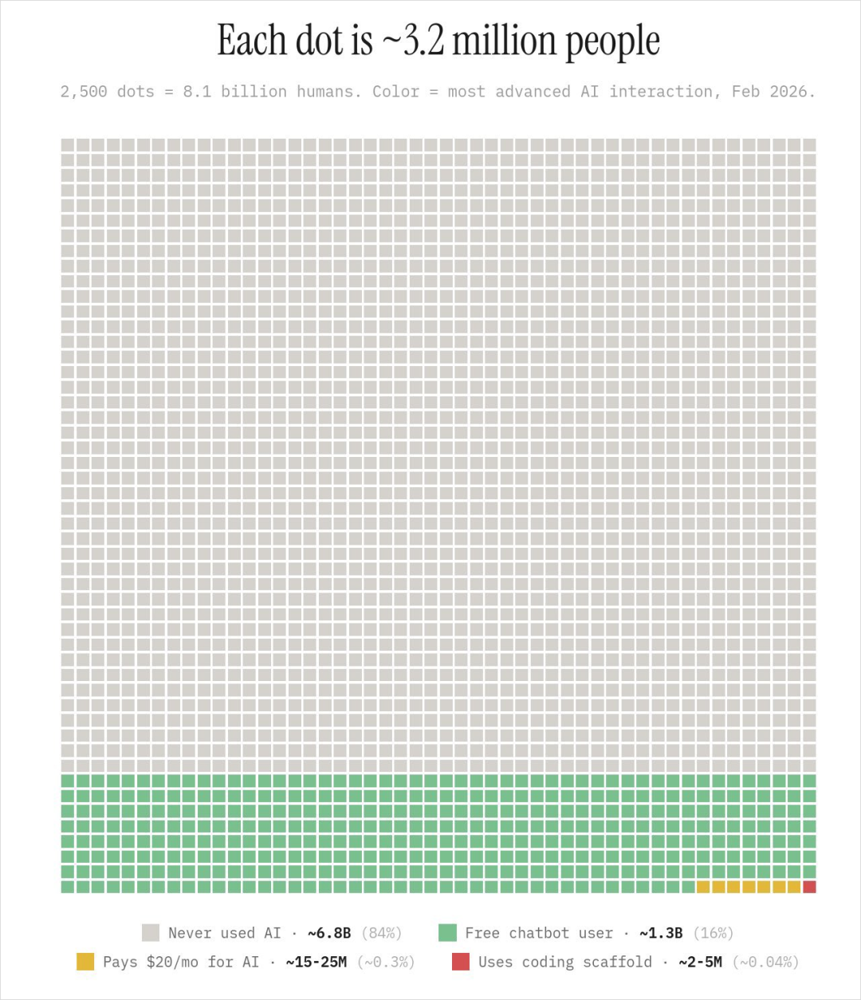

deepseek V4越便宜，用的人越多
反正这么便宜，我们可以用更多的场景用上
AI 仍处在早期，真正的分水岭不只是会不会用工具，而是能不能用它改变行动方式、创造方式和生活方式。

反正这么便宜，我们可以用更多的场景用上
Kimi，GLM，deepseek，mimo
作为一种智力资源，让他做任何事情
不要让普通模型决定你对 AI 的第一印象。预算允许时，先用顶级模型建立能力边界，再按自己的场景选择长期工具。
从周报、数据整理、邮件模板、新闻汇总这类重复任务开始。目标不是一次做大系统，而是持续积累自动化肌肉。
少给关键词，多给背景、限制、偏好和输出格式。AI 结果的质量，往往取决于你把模糊想法表达清楚的能力。
做事前先停一下，问这件事 AI 能否帮忙，能帮到哪一步。这个刻意反应会逐渐变成新的工作本能。
不要只学习概念。做一个小工具、一段视频、一篇文章或一个原型，创造会倒逼你学习提示词、上下文和审美。
AI 很擅长给正反馈，但真实世界才是检验场。把作品拿给用户、读者、同事和市场，而不是只听模型称赞。
AI 变化太快，最优学习路径很容易过期。先用起来，在具体任务里补概念，比收藏教程更有效。
模型能生成许多选项，但不能替你判断什么更好。看好作品、拆原因、自己做、再对比，是长期护城河。
效率不是终点。AI 帮你节省的时间，应该回到生活、关系和具体的人那里，而不是继续填满屏幕时间。
真正稀缺的不是会调用 AI，而是知道什么值得做、什么算做好，个人的品味——价值判断很重要。
把工作里最常见的 3 个任务交给同一个高质量模型跑一遍，用结果决定是否付费。
写下每周重复出现的 5 件小事，从耗时最稳定、格式最固定的一件开始自动化。
把“帮我做”改成“背景、目标、限制、受众、格式、评价标准”六段式。
用 AI 做一个能给别人看的东西。真实反馈会比模型夸奖更快提升判断力。
推荐提示词：
请把下面 Markdown 转成单文件 HTML。
Design Read：中文公众号长文，给 AI 学习者阅读，采用卡兹克式经验复盘叙述，结构参考 ofox 工程博客的 TL;DR、目录、模块和行动清单。
使用 taste skill：锁定一个克制的 editorial 主题，移动端不能溢出，图片可编辑，正文不要全文堆砌。
使用 html-anything：模板选 article-magazine 或 doc-kami-parchment，输出可直接保存和截图的 HTML。
Markdown 内容：
{{paste_markdown_here}}
《用AI的这三年，想跟你分享这9条心得。》